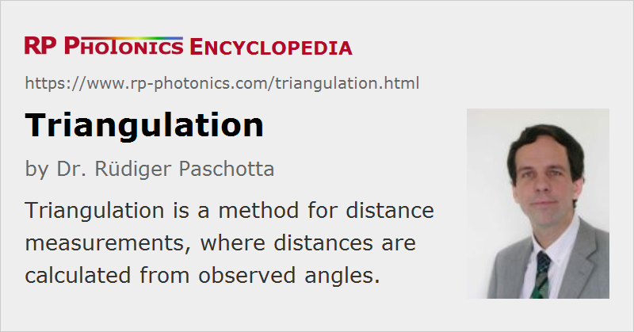

Triangulation
Definition: a method for distance measurements
German: Triangulation
Categories: optical metrology, methods
How to cite the article; suggest additional literature
Author: Dr. Rüdiger Paschotta
Triangulation is a method for distance measurements, often using a laser. It exploits the ability of a laser beam to propagate in a well-collimated form (i.e. with small divergence) over large distances. In a typical case, the laser beam illuminates a point the distance of which from the laser device is going to be measured; the laser is essentially used as a pointer. Diffuse or specular reflections from that point are monitored with a position-sensitive detector which is mounted in some distance from the laser beam, such that the laser source, the object and the detector form a triangle. Distance information is obtained from the recorded beam position on the detector.
A high detection speed enabled by some detectors (e.g. lateral effect photodiodes) makes it possible to monitor the position of a moving or vibrating part e.g. of some machinery. The accuracy obtained may typically be one-thousandth of the measured distance. For diffuse reflections, the distance can be limited by the requirement to receive a sufficient amount of reflected optical power; with specular reflections, much larger distances can be measured, but some kind of angular alignment is required.
The principle of triangulation can also be realized with a laser beam the direction of which is rapidly scanned in two dimensions. In that way, one can acquire three-dimensional (3D) images of a scene.
Requirements on the Laser Source
Ideally, a laser source for triangulation has a high beam quality in order to illuminate a small spot over a large distance. A certain optical power level is also required, particular for targets with diffuse reflection. An eye-safe laser wavelength (e.g. in the 1.5-μm region) may be beneficial with respect to laser safety, although a visible laser pilot beam helps to ensure that the correct point is targeted. Red laser diodes with a power of a few milliwatts are frequently used in combination with some beam shaper. A helium–neon laser with diffraction-limited beam quality can also be used, but is more bulky and expensive.
Questions and Comments from Users
Here you can submit questions and comments. As far as they get accepted by the author, they will appear above this paragraph together with the author’s answer. The author will decide on acceptance based on certain criteria. Essentially, the issue must be of sufficiently broad interest.
Please do not enter personal data here; we would otherwise delete it soon. (See also our privacy declaration.) If you wish to receive personal feedback or consultancy from the author, please contact him e.g. via e-mail.
By submitting the information, you give your consent to the potential publication of your inputs on our website according to our rules. (If you later retract your consent, we will delete those inputs.) As your inputs are first reviewed by the author, they may be published with some delay.
Bibliography
| [1] | R. G. Dorsch et al., “Laser triangulation: fundamental uncertainty in distance measurement”, Appl. Opt. 33 (7), 1306 (1994), doi:10.1364/AO.33.001306 |
See also: distance measurements with lasers, laser pointers, position-sensitive detectors
and other articles in the categories optical metrology, methods
|  |
If you like this page, please share the link with your friends and colleagues, e.g. via social media:
These sharing buttons are implemented in a privacy-friendly way!